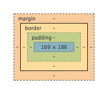

The topic of today is margins, borders, and padding. All of these elements have a very important place in positioning your content. Basically, these will help you determine where each piece of information on your page will go. Take a look at this picture to get a rough idea.
From Google DevTools
We will start going from the outside all the way in. The margin plays a big factor in the white space between one element and the next. The main thing to know about this is that it lives outside of the border.
The border seperates the padding and the margin. This can have a size of zero, be invisible, or have color and texture. This is great for outlining any element you have.
The padding lives closest to your actual element. This, similar to the margin, is also white space. The main difference between them is that this lives inside of the border.
Using all three of these properties greatly helps to create elements with the proper spacing, or lack there of. Happy Coding!